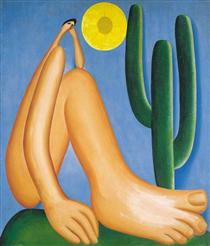
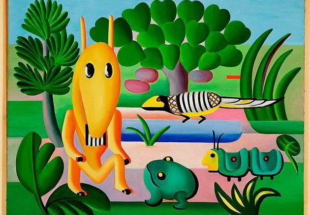

Bibliografia
Tarcila Do Amaral (1886-1973): Pintora modernista brasileira, fundamental para o desenvolvimento da arte moderna no Brasil, conhecida por suas cores vibrantes e temas nacionais, especialmente a figura humana e a paisagem brasileira.
Vida: Nascida em Capivari, São Paulo, estudou arte em São Paulo e Paris, onde foi influenciada pelo cubismo e pelo surrealismo. Retornou ao Brasil e se tornou uma figura central do movimento modernista brasileiro na década de 1920.
Obra: Sua pintura evoluiu do "Pau-Brasil" (cores vibrantes e temas nacionais) para a fase "Antropofágica" (incorporação e transformação de influências estrangeiras) e, posteriormente, para temas sociais. O quadro "Abaporu" (1928) é uma de suas obras mais icônicas.
Legado: Tarsila do Amaral é reconhecida como uma das maiores artistas brasileiras, com uma obra que celebra a identidade cultural do Brasil e contribuiu significativamente para a história da arte moderna no país.
Obras Famosas
-
Abaporu
O Abaporu é uma pintura de Tarsila do Amaral, criada em 1928, que se tornou um ícone do modernismo brasileiro. O nome vem do tupi, significando "homem que come carne de gente". A obra apresenta uma figura humana com proporções exageradas e foi fundamental para o movimento da Antropofagia, que defendia a "deglutição" de influências culturais estrangeiras para criar uma arte brasileira autêntica. O quadro inspirou o Manifesto Antropófago de Oswald de Andrade. Hoje, está no Museu de Arte Latino-Americana de Buenos Aires (MALBA).
-
Cuca
'Cuca', pintado por Tarsila do Amaral em 1924, representa a figura mítica do folclore brasileiro, a bruxa Cuca. A obra, influenciada pelo simbolismo e surrealismo, antecipa elementos que Tarsila exploraria no modernismo, com um uso expressivo de cores e formas. Embora não faça parte diretamente do movimento modernista, 'Cuca' mostra o interesse da artista pela cultura brasileira e serve como uma transição para suas obras mais conhecidas, como Abaporu.
-
Lua

Lua, pintado por Tarsila do Amaral em 1928, reflete sua fase modernista, com influências do cubismo e surrealismo. A obra apresenta uma figura feminina e a lua, estilizadas com formas geométricas e cores vibrantes, criando um ambiente abstrato e onírico. Ela mostra a evolução técnica de Tarsila, buscando uma arte autêntica e conectada com suas raízes, ao mesmo tempo em que dialoga com as vanguardas europeias da época.
-
Morro Da Favela

Morro da Favela, pintado por Tarsila do Amaral em 1924, retrata a realidade das favelas do Rio de Janeiro, com suas casas humildes e o morro ao fundo. A obra usa cores vibrantes e formas geométricas, mostrando o início da influência do modernismo na artista, enquanto também reflete seu interesse pela cultura brasileira e pela vida cotidiana. É uma das primeiras obras de Tarsila a se distanciar das influências europeias e a buscar uma identidade artística própria.
-
Operários

Operários, pintado por Tarsila do Amaral em 1933, reflete a realidade dos trabalhadores urbanos e industriais no Brasil, com uma crítica à exploração da classe operária. A obra apresenta figuras rígidas e sem expressão, em cores fortes, influenciada pelo realismo social e cubismo. Ela marca uma fase de maior engajamento político de Tarsila, abordando questões sociais e de classe, e se distancia de temas puramente estéticos.
-
Ovo

Ovo, pintado por Tarsila do Amaral em 1928, apresenta uma composição abstrata com formas geométricas e cores vibrantes. A figura central, o ovo, simboliza a criação e o nascimento, explorando temas de renovação e o imaginário. A obra reflete suas experimentações com o cubismo e surrealismo, sendo parte de sua transição para o modernismo, antes de se consolidar como uma grande artista do movimento.
-
São Paulo(Gazo)

São Paulo (Gazo), pintado por Tarsila do Amaral em 1924, retrata a urbanização e industrialização da cidade de São Paulo. A obra usa formas geométricas e cores vibrantes para representar o crescimento urbano e as fábricas, simbolizando o ambiente industrial da época. É uma das primeiras obras de Tarsila a refletir seu interesse pela realidade brasileira e antecipa sua abordagem modernista.